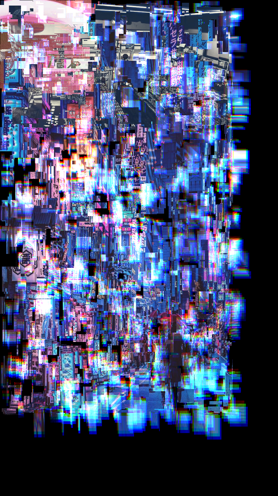
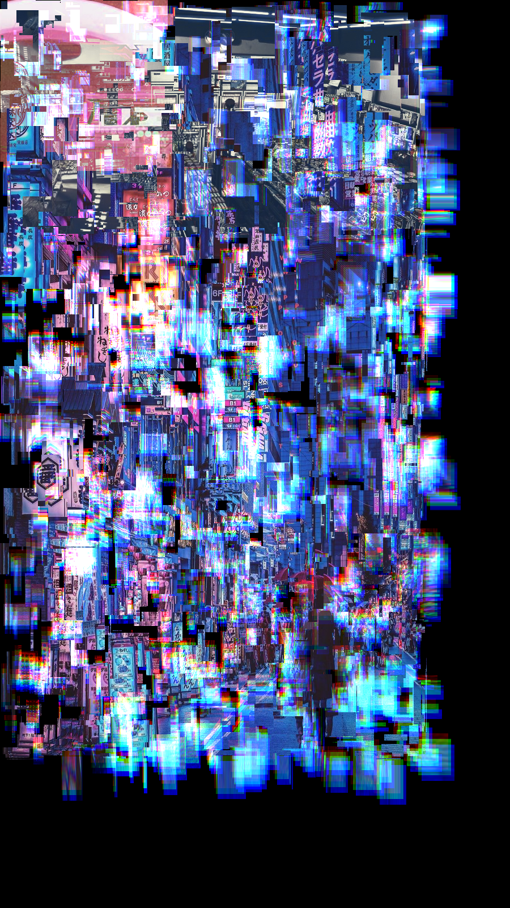
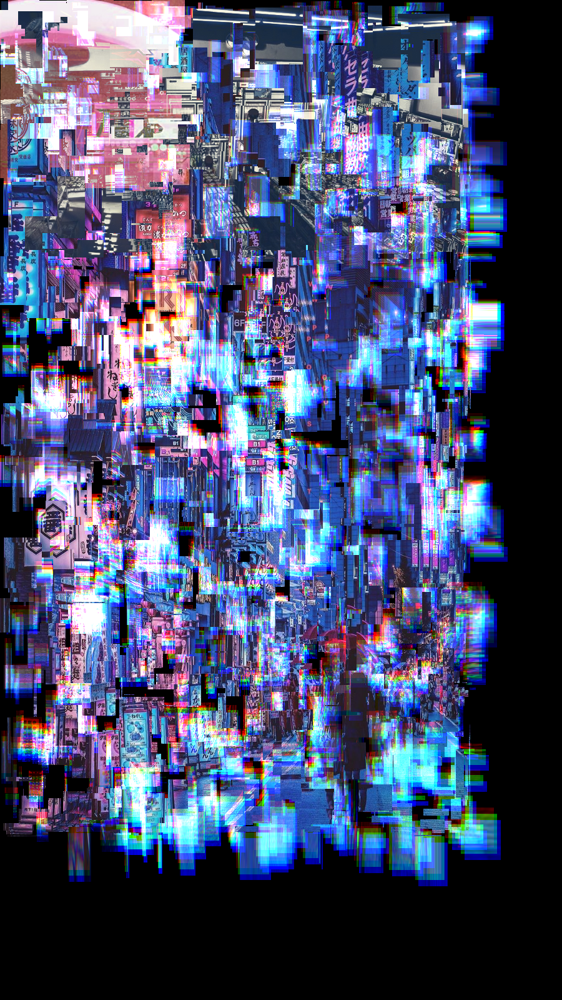

Collages
Digitalization brings change to collage art as well. What’s the difference if you’d like to do it dynamically? I gave it a try.
It was supposed to be a fast demo for students in UCB to show how Processing works, and I end up experimenting with this technique in many different pictures.
I wanted to show a very simple function to avoid overwhelming the students. I tried to make it better and had tried many different materials. I really enjoy it and it’s probably because it caters to my need to see some distorted image, a human nature developed when we were aquatic.
Enter
Enter Enter
Enter
Enter
At 2019.